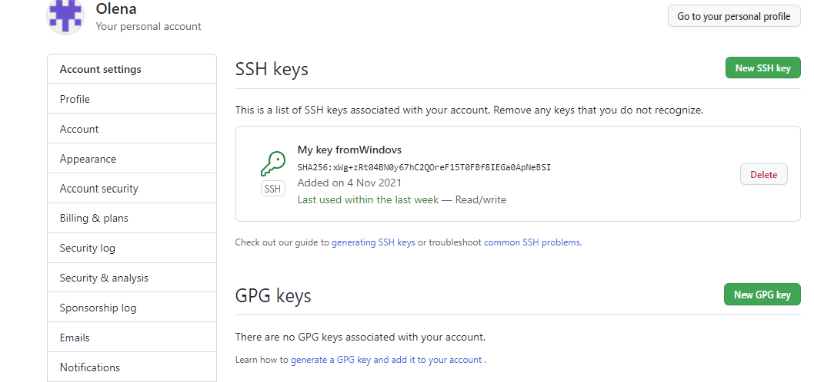

Base
it config --global user.name blabla-Встановлює ім'я, яке буде відображатися в полі автора у комітів, які ви виконуєте.
git config --global user.email blabal@bla-Встановлює адресу електронної пошти, яка відображатиметься в інформації про коміти, які ви виконуєте.
git init-Створює новий локальний репозиторій із заданим ім'ям
git status- Перераховує всі нові або змінені файли, які потребують фіксації
git add-Індексує вказаний файл для наступного коміту
git commit-Фіксує проіндексовані зміни та зберігає їх в історію версій
git log-Історія коммітів для поточної гілки
git checkout-використовується для копіювання файлів з історії або сцени до робочої директорії. Також вона може використовуватися для
перемикання між гілками.
git branch-Список, створенних або видалення гілок
git push-Завантажує всі зміни локальної гілки у віддалений репозиторій
git pull-Завантажує історію з віддаленого репозиторію та поєднує її з локальною. pull = fetch + merge
git merge-Вносить зміни вказаної гілки в поточну гілку
git clone-Завантажує репозиторій разом із усією його історією змін
.gitignore - команда, яка вказує, які файли повинен ігнорувати Git
Advanced
git revert-є типовою командою скасування.
git reset-Скасовує індексацію вказаного файлу, зберігаючи його вміст
git rebase-Повторно застосуйте комміти поверх іншої базової підказки
git cherry-pick-бере зміни, що вносяться одним коммітом, і намагається повторно застосувати їх у вигляді нового комміту в поточній
гілці.
git stash-Тимчасово зберігає всі незафіксовані зміни файлів, що відстежуються.
